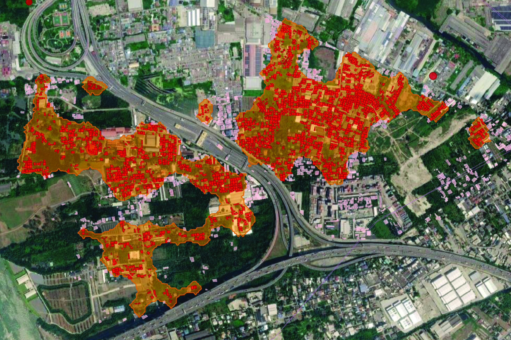

Modern metropolises grow faster than planning can track. Informal neighborhoods sit beside canals and railways — invisible to official lists. 🛰️ Our answer: the Metropolitan Planning Intelligence Platform, built on Thailand’s metros — urban acupuncture from satellite imagery, not static 20-year master plans.
1️⃣ Segmentation — AI outlines every rooftop; dense small roofs along canals and rails merge into irregular-neighborhood blobs, flagging settlements the register misses. 2️⃣ Formal matching — roofs with no cadastral record flag as potentially irregular. 3️⃣ Social sensing — live signals (news, complaints, cameras) geocoded and scored into fire, flood, crime and tenure-risk domains per community.
4️⃣ Ranking — complementary lenses (deprivation, danger, flood, build-code) set the agenda, re-earned every cycle. 5️⃣ Priorities — severity × feasibility: act now, program, monitor, watch. AI suggests; the urban governor decides. 6️⃣ Participation — ladder-graded techniques with a floor that cannot be undercut; protest monitored as risk, never planned.
7️⃣ Policy toolkits — proven packages (in-situ upgrading, re-blocking, land sharing…) dispatched by score signature. 8️⃣ Design → assessment — strategy on the map; after-action reads roof change, complaint closure, event decay. The loop closes. Scan, segment, match, sense, rank, prioritize, participate, act, assess — from raw pixels to approved urban interventions.
In collaboration with Pruethicheth Lert-Udompruksa.

Click the image above to open the application in full screen.
(You will be redirected automatically in 30 seconds)